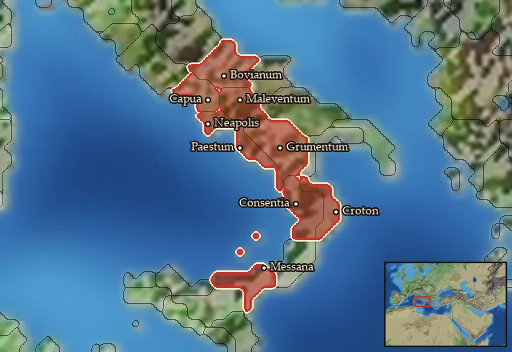

Oscan Spearmen


Class: spearmen · Category: infantry · Men per unit: 60
Description
From the mountains they come with spear and shield, in a frightful tide they carry the field. These Oscans have relinquished the shepherd’s crook and the farmer’s scythe to don the weapons of war. They wield a long thrusting spear that can also be thrown if need arises, in addition to a handful of actual javelins, and their iconic scutum shield. They are freemen of their society, but not particularly wealthy. While some of these men can afford a bronze Samno-Attic helmet, none are sufficiently well-off to wear body armour. That having been said, these Oscan Spearmen are still fearsome enough to give the average Roman citizen soldier a good thrashing!
Historical background
The idea of Oscans is an old one. Strabo (5.4.8.) both used the terms ‘Osci’: “These people are Osci, a surviving nation of the Campani”, and ‘Opici’ (Strab. 5.4): “Antiochus says that this country [Heracleum] was formerly inhabited by the Opici, and that these were called Ausones”. Polybius appears to consider these as two distinct peoples, for he says that “the Opici and Ausones inhabit the country around the Crater [of Mount Vesuvius]”. Oscan-speaking groups were not one contiguous people, but rather a variety of tribes and confederations sharing a language or at least many elements of one. The south of Italy was home to Oscan speakers in Bruttium, Lucania, and Messana, all of which showed close contact with the Greeks and Latins, with many of their older texts being written using Greek letters to form Oscan words. It was only later that Latin became their more commonly used alphabet. It is important to note that this is orthographic use of other languages, that is to say, making use of another alphabet to write in one’s own language, rather than speaking the language that created that alphabet. The texts from Bruttium, Lucania, and Messana are conventionally referred to as ‘South Oscan’, and are dated from the fourth century BC until the Social War (91-88 BC) or shortly thereafter.
In comparison, ‘Central Oscan’, the language of Campania and Samnium, was more typified by using a ‘native’ Oscan alphabet based on Etruscan and later Latin alphabets, too, and occasionally even using other alphabets besides (McDonald, Cambridge Classical Studies Oscan in Southern Italy and Sicily (2015), p. 32). Meanwhile, ‘North Oscan’, the language of the Marrucinians, Paelignians, and Vestinians, was primarily written in the Latin alphabet (McDonald (2015), p. 87). This shows that even among those known to be Oscan speakers, there was no single standard method to write and record the Oscan language. The local elites and their choice of language also gave some evidence of the relative power of a culture and its people – following wherever the tides of power flowed, with the cities of Laos and Paestum dropping Greek in favour of Oscan until later when Latin became the main language of Italy (McDonald (2015), p. 33). The Oscans were a varied group, but were nonetheless defined by their shared roots.
The Oscan Spearmen adhere to the iconic Oscan image, combining many elements that may be familiar to players of the original Rome Total War and the Samnite mercenaries available there. In RIS, however, they represent the Oscan-speaking peoples at large rather than one tribe specifically. As such, they use fairly generic equipment that can be found across Italy. Their shield is the scutum, a long oblong shield that is excellent for its mobility, keeping the body well-protected, its only real downside being that it leaves the lower legs, in particular the shins and feet, relatively exposed (Sim et al., Roman Imperial Armour (2012), p. 144). In his Natural History (16. 209), Pliny goes into some detail on how the shield was actually made, requiring a careful choice of wood: “The trees that have the coldest wood of all are all that grow in water; but the most flexible, and consequently the most suitable for making shields, are those in which an incision draws together at once and closes up its own wound, and which consequently is more obstinate in allowing steel to penetrate – this class contains the vine, agnus castus, willow, lime, birch, elder and both kinds of poplar”.
Their helmet is the bronze Samno-Attic helmet, a very interesting design that can protect the cheeks and head whilst allowing fairly unimpeded hearing and vision. The Oscans often wore it as a matter of course, drawing on their heroic past and continuing fighting in the manner of their ancestors (Burns, The Cultural and Military Significance of the South Italic warrior's Panoply (2005), p. 33). The use of javelins in conjunction with a spear that can be thrown may appear redundant at first glance, but is based on archaeological findings in Tomb 421 at Banzi, which was dated ca. 400-350 BC. The finding showed that there was a transitional period during which both javelins and dual-purpose spears were in use, as there was a pair of the traditional dual-purpose spears with long tapering points (JS58) and (JS61) found alongside two very long pila (JS59) and (JS60) (Burns (2005), p. 185). This helps to highlight that even when technology we may consider obvious or better was available, it may not necessarily have appeared as obvious to the warriors who used them at the time. Therefore, these Oscan Spearmen combine a variety of findings to best represent what would be available to the average warrior of this period.
Stats
| Rank in roster | ||
|---|---|---|
| Men per unit | 60 | █████████· 87% |
| Attack | 12 | █████····· 48% |
| Charge bonus | 2 | █········· 11% |
| Defence | 26 | ███······· 31% |
| · armour | 2 | █········· 13% |
| · defence skill | 20 | █████····· 48% |
| · shield | 4 | █████····· 48% |
| Morale | 7 | █········· 10% |
| Discipline | Low | |
| Training | Untrained | |
| Recruitment cost | 1,396 dn | █········· 13% |
| Upkeep per turn | 511 dn | ██········ 22% |
| Turns to recruit | 2 |
Weapons
| Primary | Secondary | Primary | Secondary | Primary | Secondary | Primary | Secondary | ||||
|---|---|---|---|---|---|---|---|---|---|---|---|
| Attack | 12 | 7 | Charge bonus | 2 | 4 | Type | thrown · blade | melee · blade | Damage | piercing | piercing |
| Projectile | javelin | — | Range | 50 | — | Ammunition | 2 | — | Properties | Used just before charging into combat | Light spear (braced against cavalry charges from the front) · +8 attack against cavalry |
Defence
| Primary | Secondary | Primary | Secondary | Primary | Secondary | Primary | Secondary | ||||
|---|---|---|---|---|---|---|---|---|---|---|---|
| Total | 26 | — | Armour | 2 | — | Defence skill | 20 | — | Shield | 4 | — |
Condition and terrain
| Hit points | 1 | Ground: scrub / sand / forest / snow | -1 / 0 / -4 / 0 | Charge distance | 30 | Formations | Square |
Technical stats
| Time between blows (primary / secondary) | 2.5 s / 2.5 s | Extra fatigue in hot climates | 0 | Collision mass per man (1.0 is normal) | 0.91 | Spacing between men: close / loose | 1 × 1.2 m / 2 × 2.4 m |
| Default ranks | 5 |
In battle: Can sap · Very good stamina
Who can recruit it
A core roster unit for 3 factions, each able to raise it anywhere they hold the right building:
Capua · Mamertines · Samnites
Any faction holding one of the provinces below can field it.
Exactly what a settlement must have, route by route (4)
| Building | Also requires | Building | Also requires | Building | Also requires | Building | Also requires |
|---|---|---|---|---|---|---|---|
| Indirect Rule | Garrison Building or Tier 1 Military Industrial Complex · Tier 1 Colony | Direct Rule | Garrison Building or Tier 1 Military Industrial Complex · Tier 1 Colony | Homeland | Garrison Building or Tier 1 Military Industrial Complex | Any settlement | Garrison Building or Tier 1 Military Industrial Complex · Oscan area of recruitment · not Oscan Southern area of recruitment · Any Government (Dependency, Indirect Rule or Direct Rule) · Tier 2 Colony not built |
Areas of recruitment

| Zone | Provinces | ||||||
|---|---|---|---|---|---|---|---|
| Oscan | 9 |